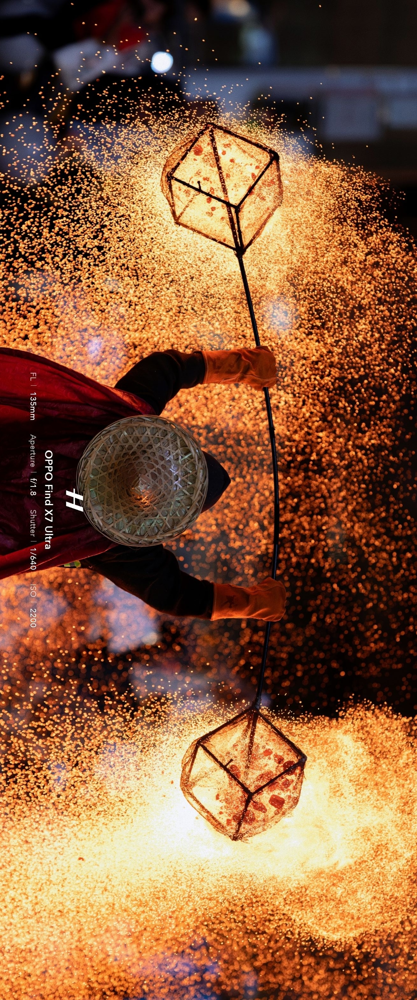
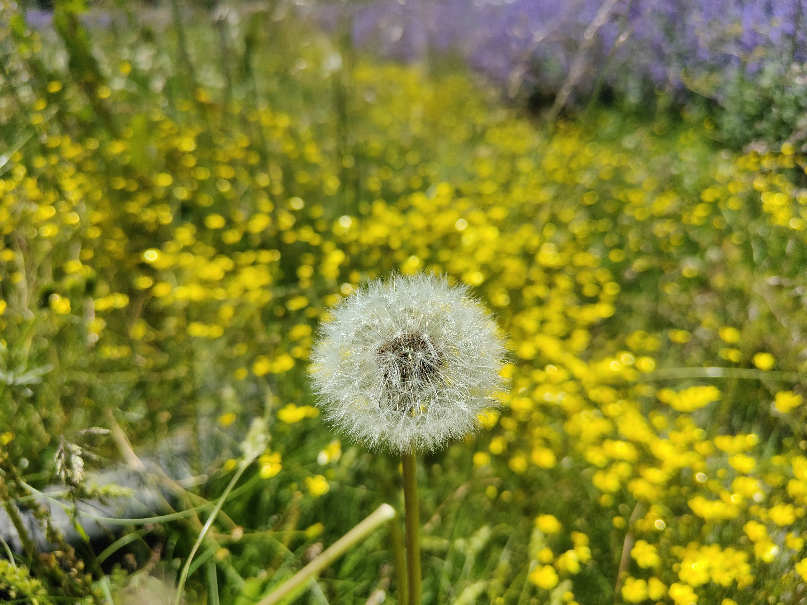

先理解现场，再开始编码
谁在用，卡在哪一步，怎样才算解决了问题？我希望先把业务流程和验收标准问清楚，再把需求拆成可以验证的改动。
我是 Wain，一名从实施开发走向 FDE 的工程师。参与 Java、Go 与 Vue 项目，关注从真实需求到可用产品的完整过程。
我更在意三个问题：需求有没有被理解，方案能不能落地，交付之后是否依然好用。

我希望带进每个项目的，是这几个习惯。工具会变，理解问题、验证想法和复盘的能力值得反复打磨。
谁在用，卡在哪一步，怎样才算解决了问题？我希望先把业务流程和验收标准问清楚，再把需求拆成可以验证的改动。
技术选型不只看“能做什么”，也看实现成本、维护难度和不确定性。先做清晰可用的方案，再用实际反馈决定下一步。
功能完成后，还要关心验证、部署和使用反馈。把过程写清楚，把问题留下记录，让下一次迭代更有依据。
经验在积累，判断也在打磨。希望每做完一个项目，留下的不只是代码，还有下次能用上的理解。
角色在变化，关注的问题也在延伸：需求怎样变成方案，方案怎样完成交付，交付之后又怎样持续改进。
目前的职业方向。把业务理解和工程实现连接起来，关注方案从想法到实际可用的过程。
从项目实施与开发起步。这段经历，是我开始把“功能实现”和“实际使用”放在一起思考的起点。
这里有正在参与的开发，也有个人作品。技术栈各不相同，背后都是具体的问题和练习。
参与基于 Go 的 New API 项目二次开发，围绕视频真人活体认证接入、素材库相关功能进行开发。
我关注的问题：新增能力如何融入已有系统，并保持清晰、可维护的边界？
以个人博客为载体的 Vue 项目实践，把内容与页面表达连接起来，探索怎样让信息更清楚地被看见。
我关注的问题：页面结构是否服务于内容，读者能否顺利找到并理解信息？
围绕居民、物业与管理员组织社区服务，涵盖报修、缴费和公告等业务。
受 Brotato 启发的像素风浏览器生存游戏。在战斗循环、武器、敌人与交互之间，做一点有趣的实验。
这些是我在项目中使用或实践的技术。我更愿意用做过什么来说明理解，而不是给熟练度打一个百分比。
业务逻辑、服务接入与二次开发。
个人博客、网页表达与浏览器创意实验。
数据管理、部署与可追溯的项目协作。
摄影让我把注意力从屏幕移开，去看光影、细节和稍纵即逝的瞬间。保留这些画面，也保留技术之外的自己。


欢迎交流开发、实施交付、FDE，以及怎样把一个想法做成可用的东西。